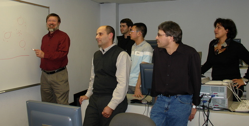

| Anna
R. Ghazaryan Research Interests: Applied Dynamical Systems Nonlinear PDEs:
|
 NCSU 2007. From left: John Franke, Vahagn
Manukian, David Long, Ming Jiang, Dmitry Zenkov, and G. |
A. Ghazaryan, V.
Manukian, S. Schecter. Traveling waves in Holling-Tanner model
with diffusion. Proceedings
of the Royal Society of London A. Preprint.
http://rspa.royalsocietypublishing.org/content/471/2177/20150045.
A. Ghazaryan, V.
Manukian. Coherent structures in a model for mussel-algae
Interaction. SIAM J.
of Dynamical Systems. 14 (2), 2015,
893-913. Preprint